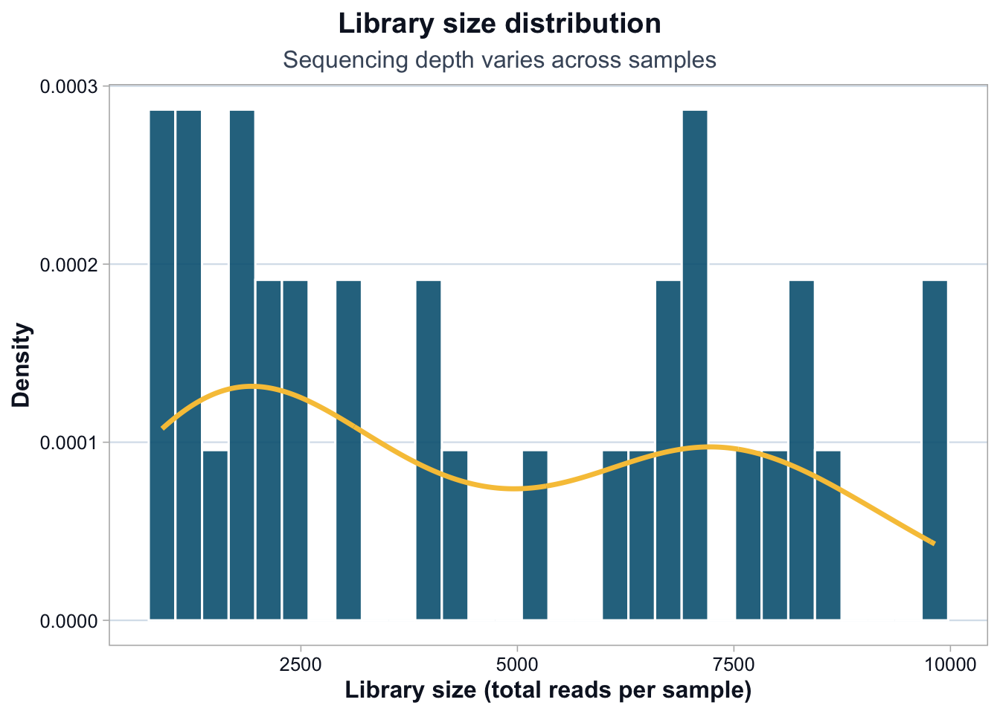
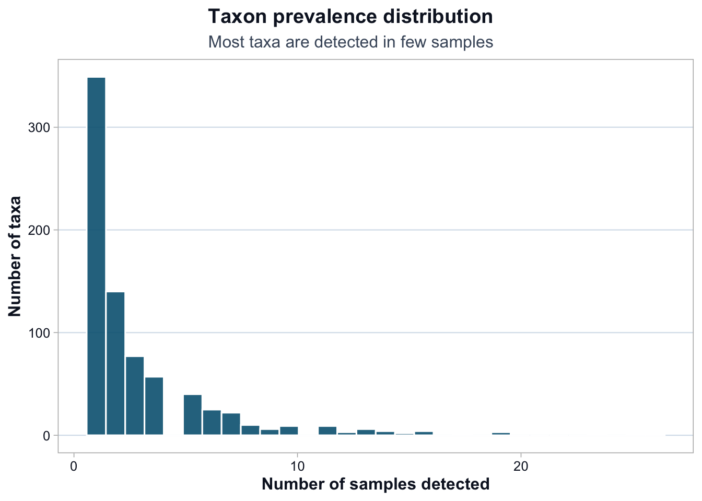
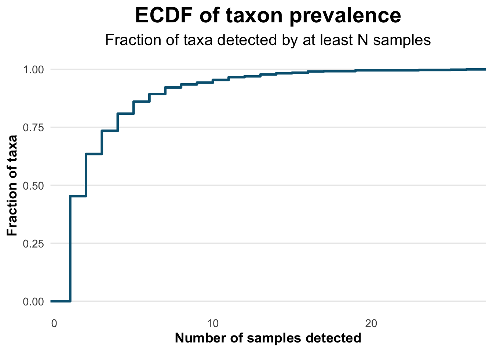

ps <- readRDS("data/moving-pictures-ps.rds")Data structure and prevalence
Microbiome count data is structurally sparse and uneven.
This chapter focuses on:
- Matrix sparsity
- Library size variation
- Taxa prevalence
Load data
Plot theme
# ------------------------------------------------------------
# CDI Modern Plot Theme (Free Track Standard)
# ------------------------------------------------------------
cdi_teal <- "#036281"
cdi_yellow <- "#f7c546"
cdi_muted <- "#475569"
cdi_plot_theme <- function(base_size = 14) {
ggplot2::theme_minimal(base_size = base_size) +
ggplot2::theme(
plot.title = ggplot2::element_text(
size = 22,
face = "bold",
hjust = 0.5
),
plot.subtitle = ggplot2::element_text(
size = 16,
hjust = 0.5,
margin = ggplot2::margin(b = 10)
),
axis.title = ggplot2::element_text(
face = "bold"
),
panel.grid.minor = ggplot2::element_blank(),
panel.grid.major.x = ggplot2::element_blank()
)
}Sparsity
otu <- methods::as(phyloseq::otu_table(ps), "matrix")
if (!phyloseq::taxa_are_rows(ps)) {
otu <- t(otu)
}
zero_prop <- mean(otu == 0)
zero_prop[1] 0.9111154Library size variation
lib_size <- phyloseq::sample_sums(ps)
summary(lib_size) Min. 1st Qu. Median Mean 3rd Qu. Max.
897 1838 4010 4524 7013 9820 df_lib <- data.frame(
sample_id = names(lib_size),
library_size = as.numeric(lib_size),
stringsAsFactors = FALSE
)
dir.create("outputs/tables", recursive = TRUE, showWarnings = FALSE)
readr::write_csv(df_lib, "outputs/tables/library-size.csv")Library size distribution
ggplot2::ggplot(df_lib, ggplot2::aes(x = library_size)) +
ggplot2::geom_histogram(
ggplot2::aes(y = ggplot2::after_stat(density)),
bins = 30,
fill = cdi_teal,
color = "white",
alpha = 0.90
) +
ggplot2::geom_density(color = cdi_yellow, linewidth = 1.2) +
ggplot2::scale_y_continuous(labels = scales::label_number()) +
ggplot2::labs(
title = "Library size distribution",
subtitle = "Sequencing depth varies across samples",
x = "Library size (total reads per sample)",
y = "Density"
) +
cdi_plot_theme() +
ggplot2::theme(
plot.subtitle = ggplot2::element_text(color = cdi_muted)
)
Detection and prevalence
detection <- 1
taxa_prev_n <- rowSums(otu >= detection)
taxa_prev_df <- data.frame(
taxon = rownames(otu),
prevalence_n = taxa_prev_n,
prevalence_frac = taxa_prev_n / ncol(otu),
stringsAsFactors = FALSE
)
summary(taxa_prev_df$prevalence_n) Min. 1st Qu. Median Mean 3rd Qu. Max.
1.000 1.000 2.000 3.022 4.000 26.000 dir.create("outputs/tables", recursive = TRUE, showWarnings = FALSE)
readr::write_csv(taxa_prev_df, "outputs/tables/taxa-prevalence.csv")Prevalence distribution
# Histogram view
ggplot2::ggplot(taxa_prev_df, ggplot2::aes(x = prevalence_n)) +
ggplot2::geom_histogram(
bins = 30,
fill = cdi_teal,
color = "white",
alpha = 0.90
) +
ggplot2::labs(
title = "Taxon prevalence distribution",
subtitle = "Most taxa are detected in few samples",
x = "Number of samples detected",
y = "Number of taxa"
) +
cdi_plot_theme()
# ECDF view (often clearer for sparse data)
ggplot2::ggplot(taxa_prev_df, ggplot2::aes(x = prevalence_n)) +
ggplot2::stat_ecdf(geom = "step", color = cdi_teal, linewidth = 1.2) +
ggplot2::labs(
title = "ECDF of taxon prevalence",
subtitle = "Fraction of taxa detected by at least N samples",
x = "Number of samples detected",
y = "Fraction of taxa"
) +
cdi_plot_theme()
Simple prevalence filter
min_prev_frac <- 0.10
keep_taxa <- taxa_prev_df$taxon[taxa_prev_df$prevalence_frac >= min_prev_frac]
ps_prev <- phyloseq::prune_taxa(keep_taxa, ps)
c(original_taxa = phyloseq::ntaxa(ps), after_filter = phyloseq::ntaxa(ps_prev))original_taxa after_filter
770 204 Relative abundance preview
ps_rel <- phyloseq::transform_sample_counts(ps, function(x) x / sum(x))
range(phyloseq::sample_sums(ps_rel))[1] 1 1